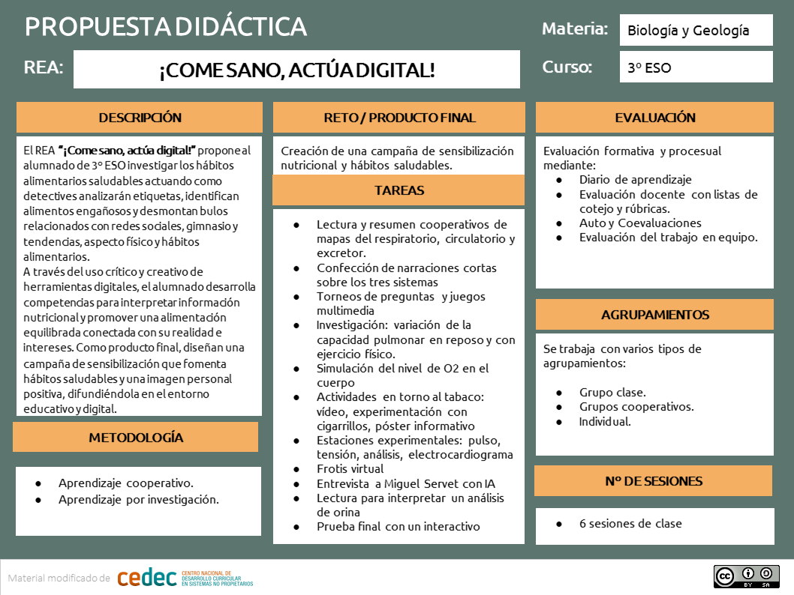

PROPUESTA DIDÁCTICA
El REA “¡Come sano, actúa digital!” propone al alumnado de 3º ESO investigar los hábitos alimentarios saludables actuando como detectives que analizan etiquetas, identifican alimentos engañosos y desmontan bulos relacionados con redes sociales, gimnasio y tendencias en relación a los alimentos y hábitos alimentarios. A través del uso crítico y creativo de herramientas digitales, el alumnado desarrolla competencias para interpretar información nutricional y promover una alimentación equilibrada conectada con su realidad e intereses. Como producto final, diseñan una campaña de sensibilización que fomenta hábitos saludables y una imagen personal positiva, difundiéndola en el entorno educativo y digital.
Tal como se indica en el Decreto 102/2023, de 9 de mayo, la materia de Biología y Geología, en la etapa de E.S.O., busca el desarrollo de la curiosidad, la actitud crítica y las bases de la alfabetización científica que permita al alumnado conocer su propio cuerpo para adoptar hábitos que le ayuden a mantener y mejorar su salud; así como cultivar actitudes responsables en el consumo, contribuir a valorar el papel fundamental de la ciencia en la sociedad e impulsar las vocaciones científicas. Por ello, en esta situación de aprendizaje las tareas están organizadas combinando el conocimiento de la alimentación saludable y sostenible, el trabajo con los mitos infundados relacionados con los procesos de nutrición y alimentación, y el desarrollo de destrezas científicas que introducen al alumnado al pensamiento y métodos científicos, les ayudan a plantear cuestiones e hipótesis, observar, realizar experimentos, debatir las conclusiones y comunicar resultados.
De la misma forma, se indica que la Biología y Geología debe fomentar el respeto, la solidaridad, la cooperación y la comunicación, siendo el trabajo en equipo y el uso de diferentes formatos y vías para comunicación, destacando los espacios virtuales de trabajo, las mejores herramientas para su desarrollo.
Por ello, se emplean una serie de dinámicas y estrategias educativas que cumplen con estos requisitos, teniendo como referencias metodológicas aquellas que promueven el aprendizaje activo, desarrollan competencias, emplean recursos variados y cumplen los principios del D.U.A. Son metodologías que suponen un estímulo y un desafío para el estudiante, le implican en el trabajo en equipo y en la resolución de situaciones significativas. Se presentan por medio de una situación de aprendizaje, con actividades guiadas y dirigidas a una producción final global.

Así, a lo largo de la propuesta didáctica “¡Come sano, actúa digital!”, se plantean producciones intermedias en distintos formatos, retos investigativos y actividades breves, variadas y ajustadas al nivel del alumnado de 3º ESO. Estas tareas conectan directamente con sus intereses (imagen corporal, redes sociales, gimnasio, alimentación) y fomentan un aprendizaje activo mediante el análisis de etiquetas, la detección de bulos, el trabajo con contenidos digitales, debates, producciones visuales y el uso de herramientas TIC. La secuencia mantiene una estructura de situación de aprendizaje orientada a un producto final significativo, contextualizando los contenidos curriculares desde un enfoque competencial y cercano a la realidad del alumnado.
Se promueve el aprendizaje cooperativo mediante dinámicas de trabajo en grupo que favorecen la participación, el pensamiento crítico y el desarrollo de competencias sociales y digitales. Este enfoque se complementa con el trabajo individual a través de un porfolio (preferentemente digital), donde el alumnado recoge evidencias de aprendizaje, reflexiones personales, análisis de alimentos y avances en el proyecto. El formato digital facilita el seguimiento, la retroalimentación continua y la mejora del proceso por parte del docente.
El uso de estrategias lúdicas y dinámicas (retos, “detectives de etiquetas”, “cazadores de bulos”, etc.) no solo tiene un carácter motivador, sino que contribuye a consolidar los aprendizajes, obligando al alumnado a interpretar información, tomar decisiones y aplicar conocimientos en contextos reales. Asimismo, se incorporan actividades de investigación y búsqueda de información en entornos digitales, acompañadas de análisis crítico, debate y comunicación de resultados, adaptando el enfoque científico a la naturaleza de los contenidos de Biología y Geología.
Para favorecer un aprendizaje profundo, las tareas están guiadas mediante andamiajes, ejemplos, plantillas y recursos visuales que facilitan la comprensión y la autonomía. Se establece una evaluación formativa continua, con retroalimentación constante y herramientas como diarios de aprendizaje o autoevaluaciones, que permiten al alumnado conocer su progreso y mejorar gradualmente.
Este REA no sustituye la labor docente, sino que actúa como un recurso flexible de apoyo. Siguiendo una estructura modular o “granular”, permite al profesorado adaptar, reorganizar o seleccionar las tareas en función de su contexto, su programación y las características de su alumnado. Esta flexibilidad favorece su reutilización y facilita su integración en diferentes situaciones de aprendizaje, promoviendo una enseñanza más personalizada, digital y conectada con la realidad del alumnado.